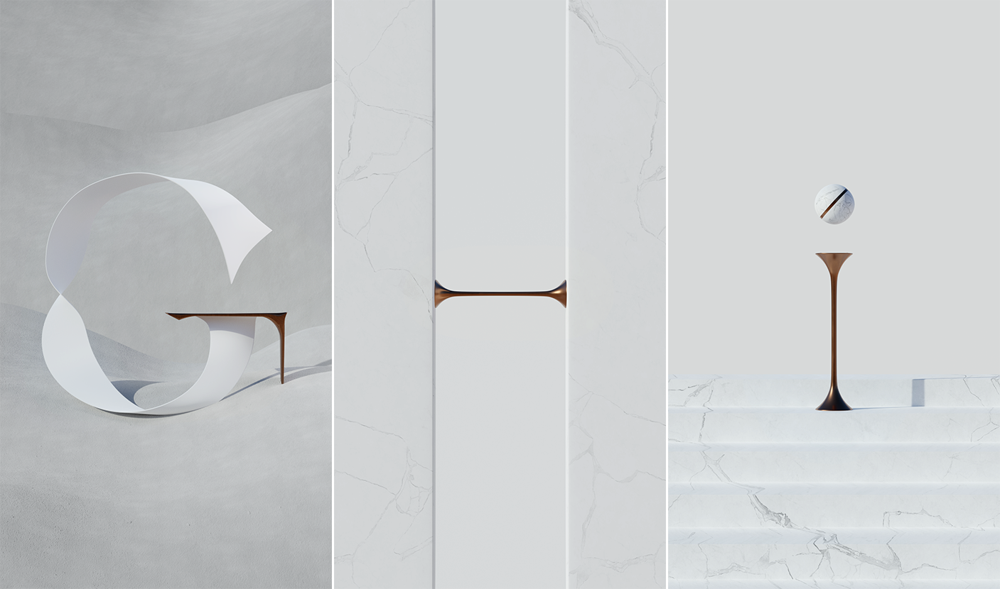

About
Inspired by 36 Days of Type, this 3D type exercise series is inspired by contemporary minimalist sculpture and architecture. It uses a contrast of geometric and organic shapes to create letterforms with various tone-on-tone materials and textures.
